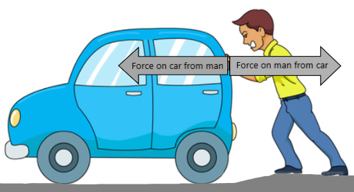

You can search below or click on a science
area to find information for your research question:
Force
What is a force? A force is a push or pull on an object. Forces can be caused by another object
pushing or pulling on the object when they are touching each other. Forces due to objects touching each other are called "contact forces."
Friction is another type of contact force that acts when different surfaces are in contact.
There are other forces that act on the object
from a distance. These forces include gravity (or gravitational force) and electric forces (if the object has an electric charge).
Example. Let's think about the different forces acting on objects in example below:
In the example shown below, a man is pushing a car. Think about all of the forces acting on both
the man and the car in this example. (Hint: look at where the man and car are in contact with each other and other things.)
We'll start by identifying the contact forces acting on the man and car. (Click "1" below.)
One (pretty obvious) contact force is the force of the man pushing on the car, represented above by the arrow. Since the man pushes to the left, the arrow points left.
Before clicking on "2" below to see more forces, think about some other contact forces acting on the man and car.
How many forces can you identify?

Another contact force is the force of the car pushing back on the man. (If the car didn't push back on the man, the man would fall forward!)
Let's look for some more contact forces acting on the man and car now (click "3")...
Both the man and the car are in contact with (or touching) the ground. So, there are also (contact) forces from the ground
pushing up on the man and on the car. (If the ground did not push up, the man and car would fall downward through the ground!)
But have we found all of the contact forces? (To find out, click "4.")
The force of friction acts on each of the car's tires, resisting forward motion. The force of friction also acts on the soles of the man's shoes, resisting the backward motion. (If there were no
friction acting on the man's shoes, he would slide to the right, as if he were on ice!)
We have identified a lot of forces. In fact, we have identified all of the contact forces acting on the man and car.
But we're not quite done. Can you think of some other forces acting on the man and car? (Click "5.")
The force of gravity always acts on all objects on Earth. So, we need to include the force of gravity acting on both the man
and the car. Gravity acts downward.
We have now identified all forces acting on the car and on the man.
A girl is swinging on a swing. Can you identify all of the forces on the girl and on the swing seat?
Centripetal force & "Centrifugal force"
In the figure below, the circular path of the girl as she swings is shown (in gray).
As before, the (contact) force of the swing pushing up on the girl is shown. Because that force always acts toward the
center of the circle formed by the girl's path, this force is one type of centripetal force.
In the figure below, the woman turns to the left.
The (contact) force of seatbelt on the woman acting in the direction of the turn (to the left) is shown.
Because that force always acts toward the
center of the circle formed by a turning object, this force is another type of centripetal force.
When you're in a car that turns to the right, you feel like you're being pushed to left. (Or, if you're in a car that turns to the left, you
feel like you're being pushed to the right.) So, how can this not be a force?
This is a great question! The reason it FEELS like you're being pushed to the left (or right) is because your body "wants" to continue moving in a straight line.
So, when the car turns, your body just keeps moving in a straight line. This makes it seem like you're being pushed in the direction opposite the turn,
even though you're not!